Académie des beaux-arts
Première musicienne japonaise à se produire lors d'une cérémonie d'installation à l'Académie des beaux-arts de l'Institut de France.
Pianiste concertiste
Pianiste concertiste japonaise établie à Paris, Yoko Yamada mène une carrière internationale au premier rang de la création musicale d'aujourd'hui. Elle crée les œuvres des compositeurs de son temps et se produit sur les scènes et avec les institutions les plus prestigieuses : Institut de France, Théâtre du Châtelet, Ensemble intercontemporain, Festival d'Automne à Paris.
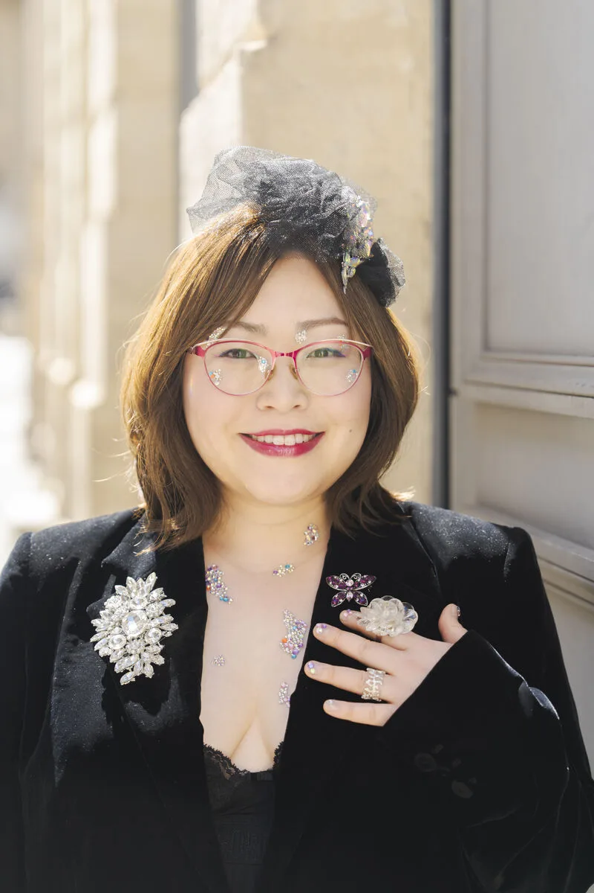
Première musicienne japonaise à se produire lors d'une cérémonie d'installation à l'Académie des beaux-arts de l'Institut de France.
Récitals lors du symposium franco-américain « Des Lumières à l'IA », organisé par l'Académie des sciences et la National Academy of Sciences des États-Unis.
Première Japonaise résidant à l'étranger à figurer dans une rubrique spéciale du magazine Gekkan Piano, publié par Yamaha au Japon.
Création, avec Régis Campo, d'une œuvre commandée par Kent Nagano et Steinway Paris pour le piano Steinway Spirio, lors du concert d'anniversaire de Tom Johnson.
En collaboration avec le Centre national de la danse, le John Cage Trust et le Merce Cunningham Trust.
Sur la scène de ce festival de musique pop, devant un public de 8 000 personnes.
Vexations d'Erik Satie, avec le Théâtre du Châtelet et l'Ensemble intercontemporain.
« Concert honorifique des Académiciens » avec Régis Campo, l'Ensemble Ars Nova, Thierry Escaich et le Trio Messiaen.
Récital au Festival international de musique de Besançon avec l'Université de Franche-Comté et le compositeur Régis Campo.
Née dans la préfecture d'Aichi au Japon et établie à Paris, Yoko Yamada est une pianiste concertiste dont la carrière internationale se situe au cœur de la création musicale contemporaine. Son parcours se distingue par sa dimension interdisciplinaire : aux côtés des compositeurs, des ensembles et des institutions de la musique d'aujourd'hui, elle collabore avec des chorégraphes, des plasticiens, des photographes et des performeurs, de la scène contemporaine jusqu'aux musiques actuelles.
Formée au Japon à l'Université Doshisha pour femmes (Doshisha Women's College of Liberal Arts, Kyoto), elle poursuit ses études en France à l'École normale de musique de Paris puis au Conservatoire de Ville-d'Avray. Sa formation s'est aussi construite hors du cadre académique, auprès de grandes figures de l'interprétation et de la composition contemporaines : académie Manifeste de l'IRCAM (2012) avec le pianiste Sébastien Vichard (Ensemble intercontemporain) et le compositeur Philippe Manoury ; festival Acanthes à Metz (2011) avec Andrew Zolinsky ; Académie de Royaumont (2011) avec Françoise Thinat, Wilhem Latchoumia, Jean-Frédéric Neuburger et Anaël Bonnet ; Atelier Répertoire & pédagogie du piano contemporain avec Martine Joste.
Elle a travaillé le piano avec Jean-Marie Cottet, Odile Delangre, Noriko Maeda, Lin Jeaxun, Hiroko Mukunoki et Paul Montag (accompagnement), et s'est formée à d'autres disciplines : la musicologie avec Ryosuke Shiina, l'orgue avec Kazuko Hirakawa, le clavecin avec Laure Morabito et la musique de chambre avec Claude Lelong.
Elle a collaboré avec de nombreux musiciens de renom, issus d'Europe, d'Amérique du Nord, d'Amérique latine, du Moyen-Orient et du Japon. Elle a notamment travaillé — au sens de collaborations artistiques — avec les compositeurs Michel Decoust, Alain Louvier, Philippe Manoury, Régis Campo, Frédéric Acquaviva, Bruno Giner, Ramon Lazkano, Susumu Yoshida, Tom Johnson, Alexandre Gherban, Louis Aguirre, Gabriel Sivac et Haruyuki Suzuki, entre autres. Elle a assuré des créations mondiales d'œuvres de Régis Campo, Frédéric Acquaviva, Jeroen Elfferich, Davor Vincze, Mariana Ungureanu — dont l'opéra Dorian Gray — et Haruyuki Suzuki, ainsi que des créations françaises d'Ivan Wyschnegradsky et de Renaud Gagneux.
Elle s'est produite avec l'Ensemble intercontemporain et le Théâtre du Châtelet (Vexations d'Erik Satie), l'ensemble Court-circuit sous la direction de Jean Deroyer, l'Ensemble Ars Nova et le Trio Messiaen aux côtés de Régis Campo et Thierry Escaich, ainsi qu'au Festival d'Automne à Paris, en collaboration avec le Centre national de la danse, le John Cage Trust et le Merce Cunningham Trust. Elle défend le répertoire micro-intervallique lors des concerts à quatre pianos et « Micro-intervalles » donnés avec l'Association Ivan Wyschnegradsky. À l'invitation de Kent Nagano et de Steinway Paris, elle prend part au concert d'anniversaire de Tom Johnson et crée avec Régis Campo une œuvre commandée pour le piano Steinway Spirio.
Invitée des biennales de Biwako et de Nishinomiya Funasaka au Japon, du Week-end Claviers contemporains (carte blanche), du festival d'Auvers-sur-Oise et du Festival international de musique de Besançon, elle se produit aussi devant le très large public des musiques actuelles, notamment au festival Conc'air (8 000 spectateurs).
Ce qui distingue son parcours est la diversité des disciplines qu'il réunit autour du piano. La danse, au Festival d'Automne à Paris, en collaboration avec le Centre national de la danse, le John Cage Trust et le Merce Cunningham Trust. Les arts plastiques, avec ORLAN — pour Le Slow de l'artiste, où elle joue le célesta et le toy piano — et avec Frédéric Acquaviva pour [səminal], conçu pour l'exposition parisienne de Paul-Armand Gette. La photographie, avec le livre-CD Le Bleu du Ciel de Régis Campo et Édouard Taufenbach, Prix Swiss Life à 4 mains. La littérature, avec le concert du 150e anniversaire de Paul Claudel aux côtés de Michael Edwards, de l'Académie française, et la Nuit de la lecture « Les mille et une langues » à l'Institut de France. Les sciences, avec les récitals donnés lors du symposium « Des Lumières à l'IA » de l'Académie des sciences et de la National Academy of Sciences des États-Unis, et le récital « Musique & Mathématiques » donné avec l'Université de Franche-Comté. L'opéra, avec la création de Dorian Gray de Mariana Ungureanu.
Première musicienne japonaise à se produire lors d'une cérémonie d'installation à l'Académie des beaux-arts de l'Institut de France, elle est également la première Japonaise résidant à l'étranger à figurer dans une rubrique spéciale du magazine Gekkan Piano (Yamaha, Japon). Ses interprétations sont diffusées par France Musique, France Inter, France Info, Radio Classique, France Télévisions, la RTS, Musiq3-RTBF, SWR2, Deutschlandfunk Kultur, Radio y TV Mexiquense ou Radio New Zealand, et son travail est présent dans la presse internationale, de Télérama, Le Monde, Elle, Vogue et Paris Match à Diapason, Classica, Circuit (Canada) et The Wire (Royaume-Uni), avec des articles publiés en France, au Canada, au Royaume-Uni et au Japon.
Premier prix à l'unanimité avec les félicitations du jury au Grand concours de piano Madeleine de Valmalète, médaille d'argent au concours international Claude Kahn et lauréate des concours internationaux de Yokohama et d'Osaka, elle a bénéficié des bourses de la SACEM, de l'Adami et du Clapp (DWCLA, Kyoto). Elle a été membre du jury du concours de composition IRCAM — Gaîté Lyrique 2012.
À compléter : messages de personnalités transmis par Yoko.
Le parcours de Yoko Yamada, selon les rubriques de son curriculum vitæ.
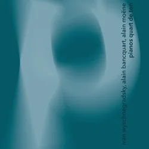
Enregistrement consacré au piano en quarts de ton, publié par le label Shiiin en collaboration avec l'Association Ivan Wyschnegradsky. Il fait entendre le répertoire micro-intervallique dont Ivan Wyschnegradsky fut le pionnier et que Yoko Yamada joue aussi en concert avec l'association, lors des concerts à quatre pianos et « Micro-intervalles ».
Écouter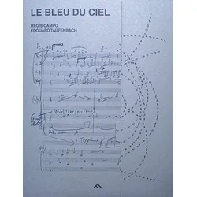
Livre-CD réunissant la musique du compositeur Régis Campo et les images du photographe Édouard Taufenbach, distingué par le Prix Swiss Life à 4 mains. En 2021, la Fondation Swiss Life a présenté le projet dans plusieurs expositions, notamment à Paris, Roubaix, Bordeaux et Arles.
Écouter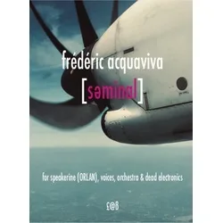
Disque de Frédéric Acquaviva conçu pour l'exposition parisienne de Paul-Armand Gette, aux côtés de nombreux artistes dont ORLAN, Denis Dufour, Tom Johnson, Vinko Globokar et Loré Lixenberg. Frédéric Acquaviva a présenté la même année l'exposition « Séminal » à Paris.
Écouter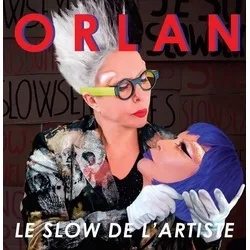
Disque de l'artiste plasticienne ORLAN, paru en CD et en vinyle, sur lequel Yoko Yamada joue le célesta et le toy piano.
Écouter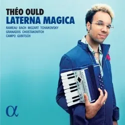
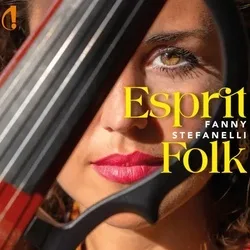
Elle a travaillé avec de nombreux compositeurs — au sens de collaborations artistiques —, dont :
Yoko Yamada a assuré plusieurs créations mondiales de Régis Campo, Frédéric Acquaviva, Jeroen Elfferich, Davor Vincze, Mariana Ungureanu ou encore Haruyuki Suzuki, et des créations françaises de Wyschnegradsky ou encore de Renaud Gagneux.
À compléter : autres jurys (liste préparée par Yoko).
Ses exécutions ont été diffusées par France Musique, France Inter, France Info, Radio Classique, France Télévisions, Radio Libertaire, la radio suisse (RTS), la radio belge Musiq3-RTBF, les radios allemandes SWR2 et Deutschlandfunk Kultur, la radio anglaise Resonance, la radio et télévision mexicaine Radio y TV Mexiquense, et Radio New Zealand.
Elle a obtenu plusieurs bourses d'études : SACEM, Adami (France) et Clapp de DWCLA (Kyoto).
Télérama, Le Monde, Elle, Vogue, Paris Match, Polka Magazine, L'Éducation musicale, ResMusica, Diapason, Classica (France), Circuit (Canada), Wire (Angleterre), etc., Gekkan Piano (magazine de Yamaha au Japon).
Blog musical de Thierry Vagne, ResMusica.
Elle apparaît dans plusieurs livres : Régis Campo : Musique de l'émerveillement de Thierry Vagne, Musique cabalistique de Frédéric Acquaviva.
Elle a étudié à l'Université de jeunes filles de Doshisha (Japon), à l'École normale de musique de Paris et au Conservatoire de Ville-d'Avray (France), puis dans les académies :
Elle a étudié avec de nombreux professeurs de piano comme Jean-Marie Cottet, Odile Delangre, Noriko Maeda, Lin Jeaxun, Hiroko Mukunoki, Paul Montag (accompagnement au piano), mais également d'autres disciplines avec Ryosuke Shiina (musicologie), Kazuko Hirakawa (orgue), Laure Morabito (clavecin) ou encore Claude Lelong (musique de chambre).
Elle enseigne le piano au Centre de musique de Neuilly-sur-Seine.
À compléter : prochains concerts (date, lieu, programme, lien de réservation).
Date à préciser
Académie des sciences — symposium bilatéral organisé avec la National Academy of Sciences des États-Unis : 250 years of Revolutionary Science shared between France and the U.S.
Date à préciser
Institut de France, Paris
Soirée des cinq académies de l'Institut de France autour des « mille et une langues du corps ».
À vérifier avec Yoko : les deux programmes ci-dessous sont repris de l'ancien site, pas du CV.
Festival international de musique de Besançon Franche-Comté, avec l'Université de Franche-Comté
Le Regard du Cygne, Paris
À compléter : concerts antérieurs avec dates, lieux et œuvres jouées.
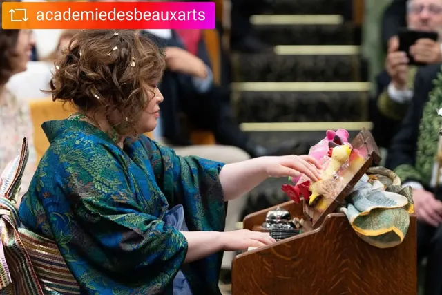
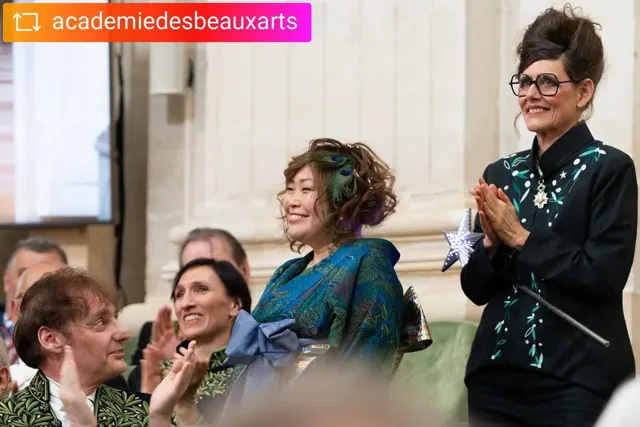
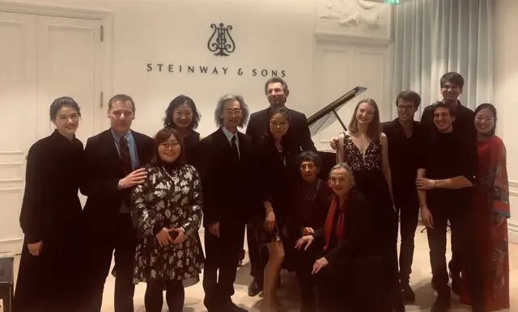
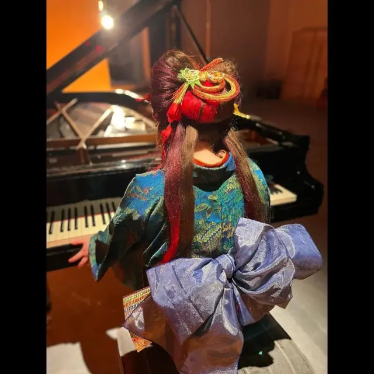
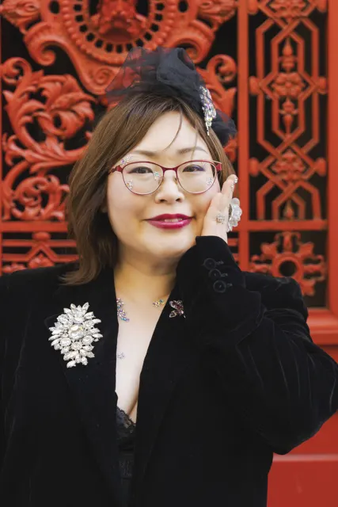
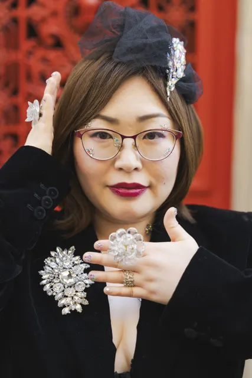
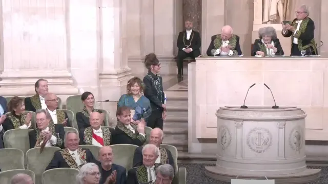
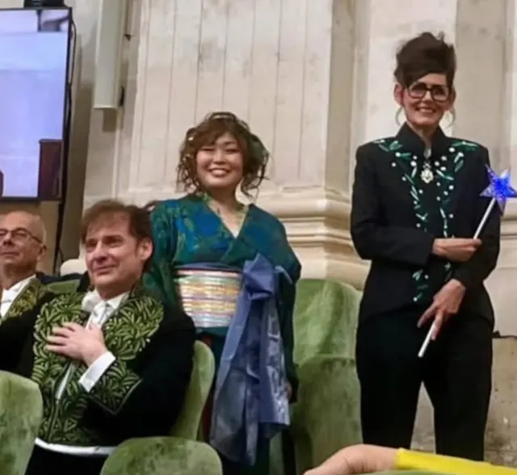
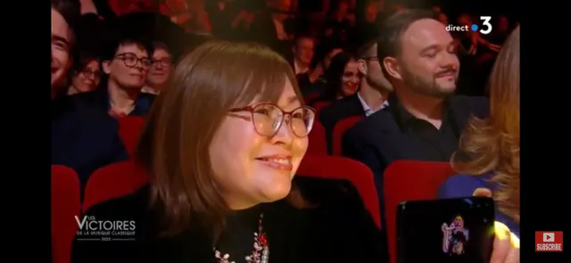
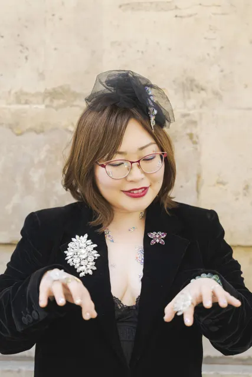
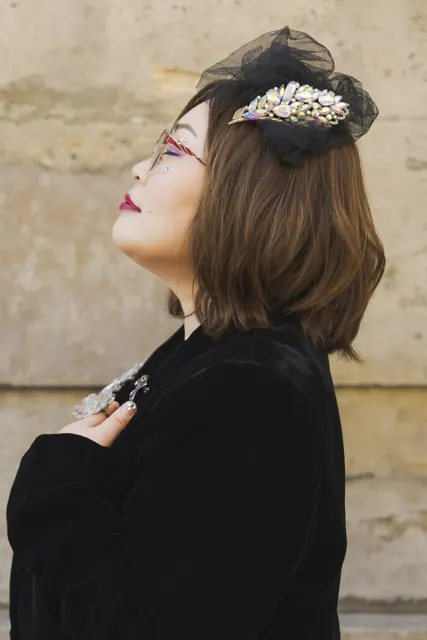
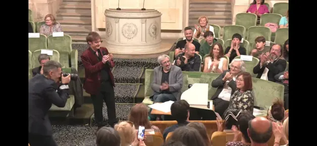
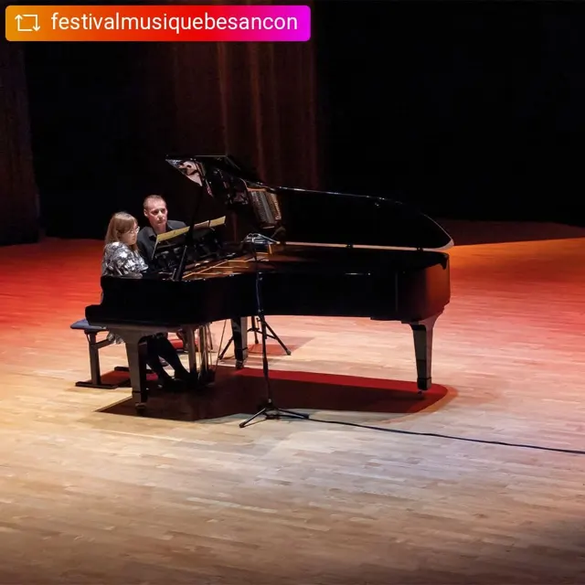
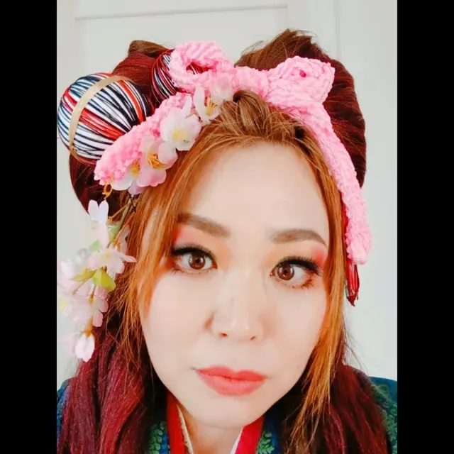
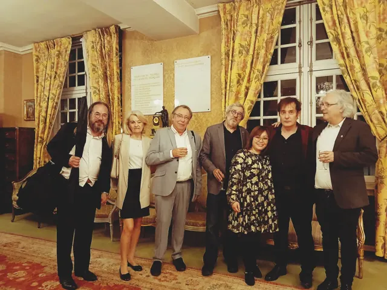
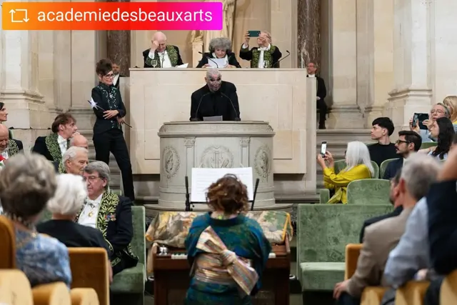
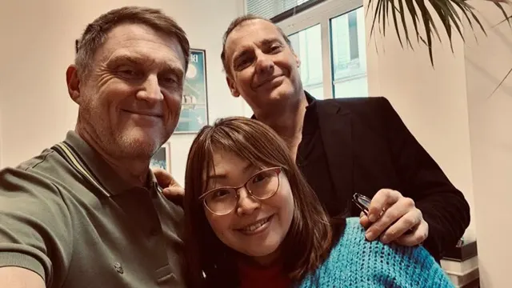
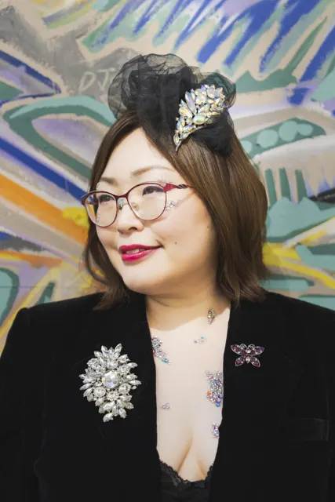
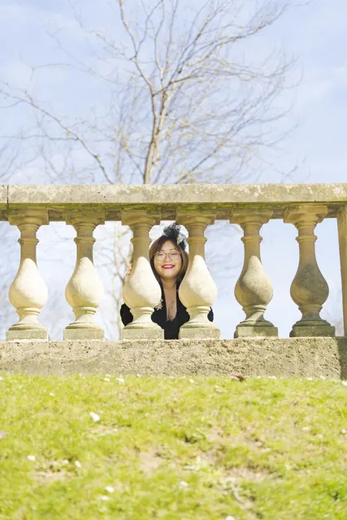
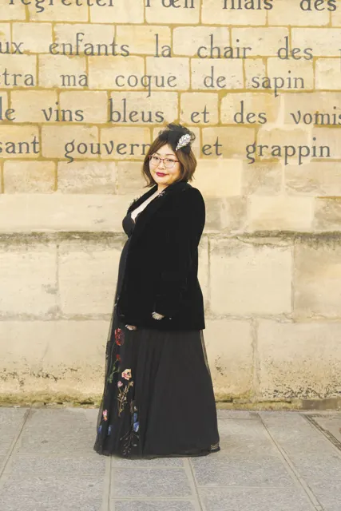
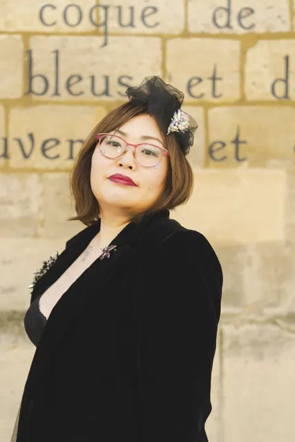
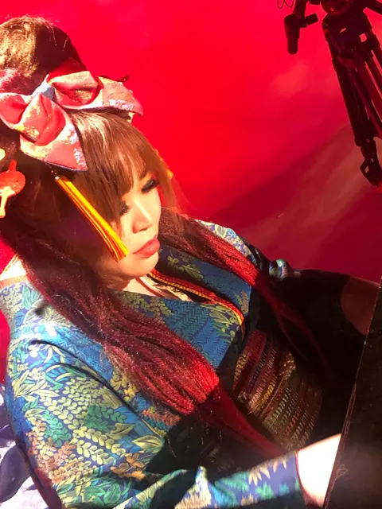
Pour toute demande de concert, de collaboration ou de cours de piano :